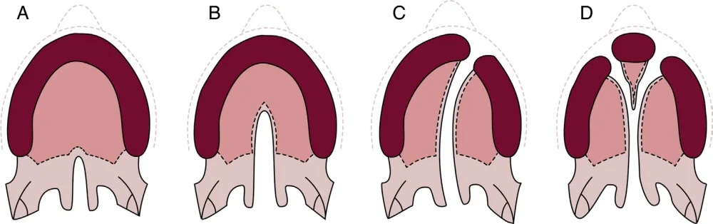
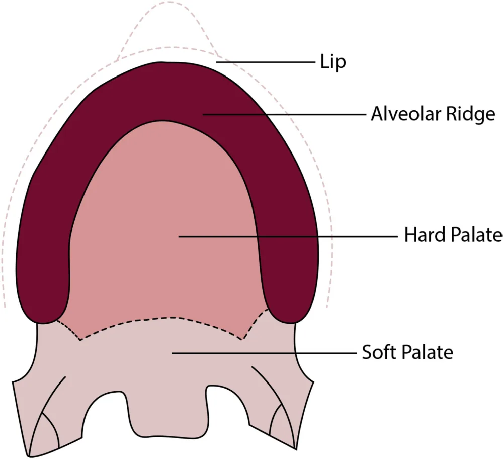

نسخه استخراجشده؛ ترجمه یا تأیید علمی انجام نشده است. وضعیت: captured
بین هفتههای ۴ تا ۸ جنینی، کل صورت از ۵ برجستگی (Prominence) ساخته میشود:
فرونتونازال (Frontonasal) — یک عدد، در بالا
ماگزیلاری (Maxillary) — دو عدد، از طرفین
مندیبولار (Mandibular) — دو عدد، در پایین
مزانشیمِ این برجستگیها از سلولهای ستیغ عصبی (Neural Crest) میآید که از لبهی لولهی عصبی مهاجرت میکنند — به همین دلیل به آن اکتومزانشیم میگویند.
لب پایین و چانه زودتر از همه (هفته ۴) با ادغام دو برجستگی مندیبولار کامل میشود.
لب بالا از ادغام برجستگی نازال داخلی + ماگزیلاری ساخته میشود — و اینجاست که شکاف لب رخ میدهد.
کام در دو مرحلهی جدا ساخته میشود و مرز آنها سوراخ اینسیزیو (Incisive Foramen) است:
کام اولیه (Primary Palate): جلوی سوراخ اینسیزیو، از قطعهی بینفکی (Intermaxillary Segment) — شامل ۴ دندان قدامی.
کام ثانویه (Secondary Palate): عقب سوراخ اینسیزیو، از شلفهای کامی (Palatal Shelves) ماگزیلا، بین هفتهی ۶ تا ۱۲.
شلفها ابتدا عمودی در دو طرف زبان آویزاناند؛ سپس با پایینآمدن زبان، حدود هفتهی ۷ تا ۸ ۹۰ درجه میچرخند و افقی میشوند و از جلو به عقب با هم ادغام میگردند.
نکتهی طلایی: در جنین مؤنث این چرخش تقریباً یک هفته دیرتر اتفاق میافتد؛ پنجرهی آسیبپذیری طولانیتر است و به همین دلیل شکاف کامِ ایزوله در دختران شایعتر است.


بافتهای مختلف بدن با سرعتهای متفاوت رشد میکنند (منحنیهای Scammon):
بافت عصبی (مغز و جمجمه): انفجاری و زودرس — تا ۶ تا ۷ سالگی حدود ۹۰٪ رشدش تمام شده است.
بافت عمومی (اسکلت، عضله، فکها): منحنی S شکل با یک جهش در بلوغ.
پیامد بالینی که همهجا به کارت میآید:
ماگزیلا به کرانیوم نزدیکتر است، پس الگوی رشدش به منحنی عصبی نزدیکتر و زودتر تمام میشود.
مندیبل از الگوی عمومی پیروی میکند و تا اواخر نوجوانی (در پسرها گاهی تا اوایل دههی ۲۰) رشد میکند.
به همین دلیل است که ایمپلنت در کودک و نوجوانِ در حال رشد ممنوع است: ایمپلنت مثل دندان انکیلوزه ثابت میماند و با رشد فک، در اینفرااکلوژن فرو میرود.